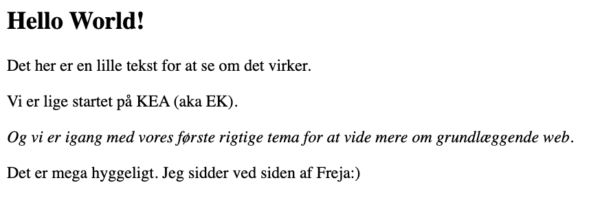
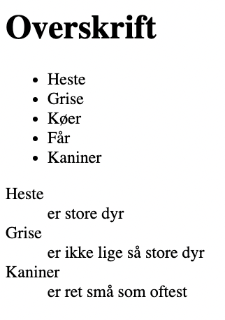

WEBUDVIKLING
I Tema 2 arbejdede vi med webudvikling. Vi lærte om designkonventioner, gestaltprincipper, wireframes, styletile, fonte og tekstopsætning. Vi arbejdede med semantisk markup, code reuse og opsætning af en hierarkisk mappestruktur navigation og navnekonventioner.
Vi udviklede vores evner i VS Code hvor vi legede lidt med css grid, flex og media queries. Vi fokuserede meget på responsivt design, arbejdet med “mobile first” tilgangen og generelt praksisnære metoder, så vi kunne forstå hvordan værktøjerne bruges i erhvervet.
Jeg har i dette tema lært meget om ophavsret, licenser, rettigheder og datasikkerhed. Vi arbejdede også videre med Figma og hvordan værktøjerne til billedbehandling fungerer. Derudover har jeg fået mere kendskab til filformaterne: webP, svg, png og jpg. Og så har jeg selvfølgelig også lært om semantisk web, og separation af struktur og styling.
Eksempler på øvelser
 Hvis du kunne tænke dig at kigge lidt nærmere på mit første mobilsite eller min startprøve, kan det findes her.